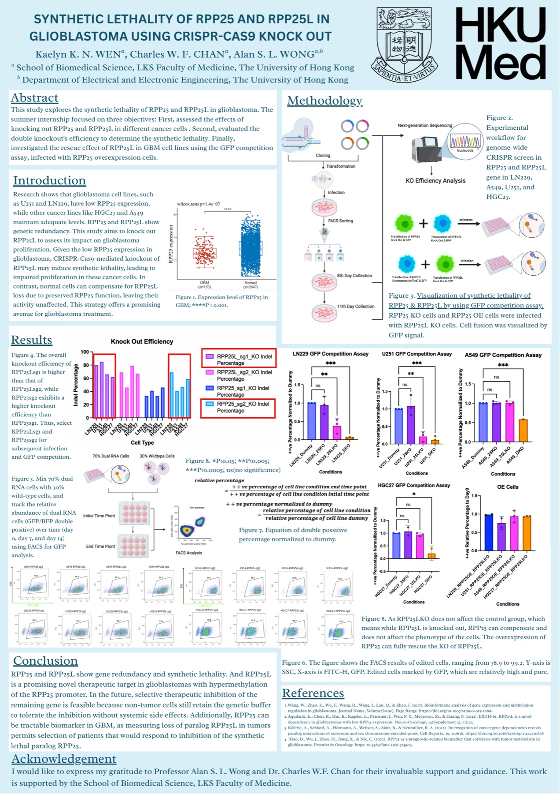
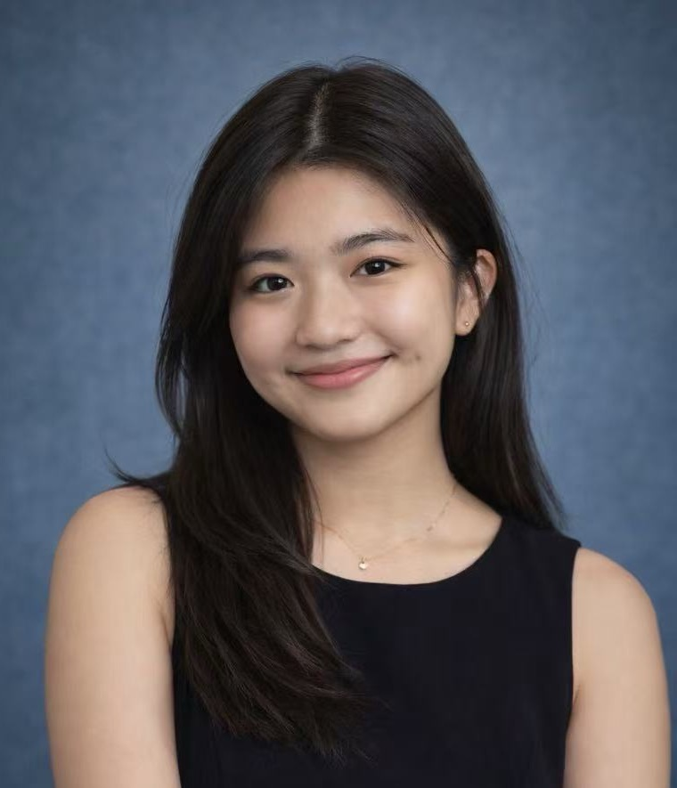
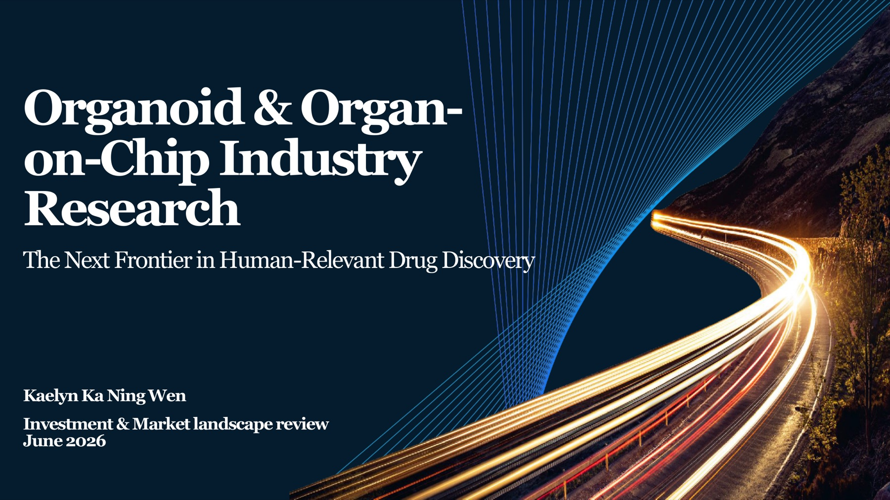
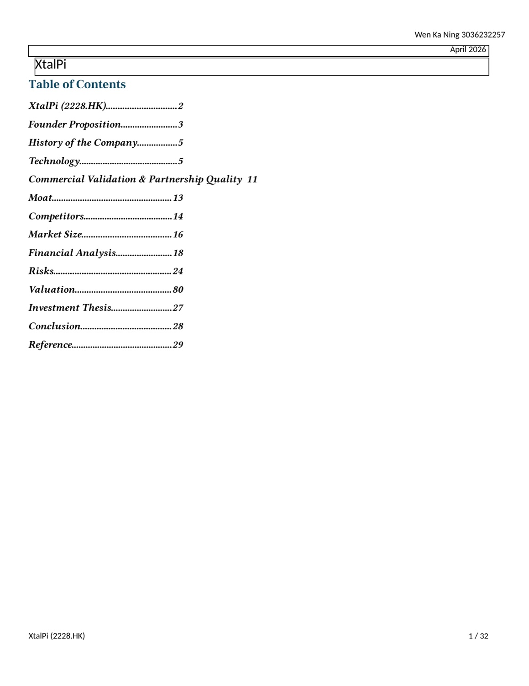
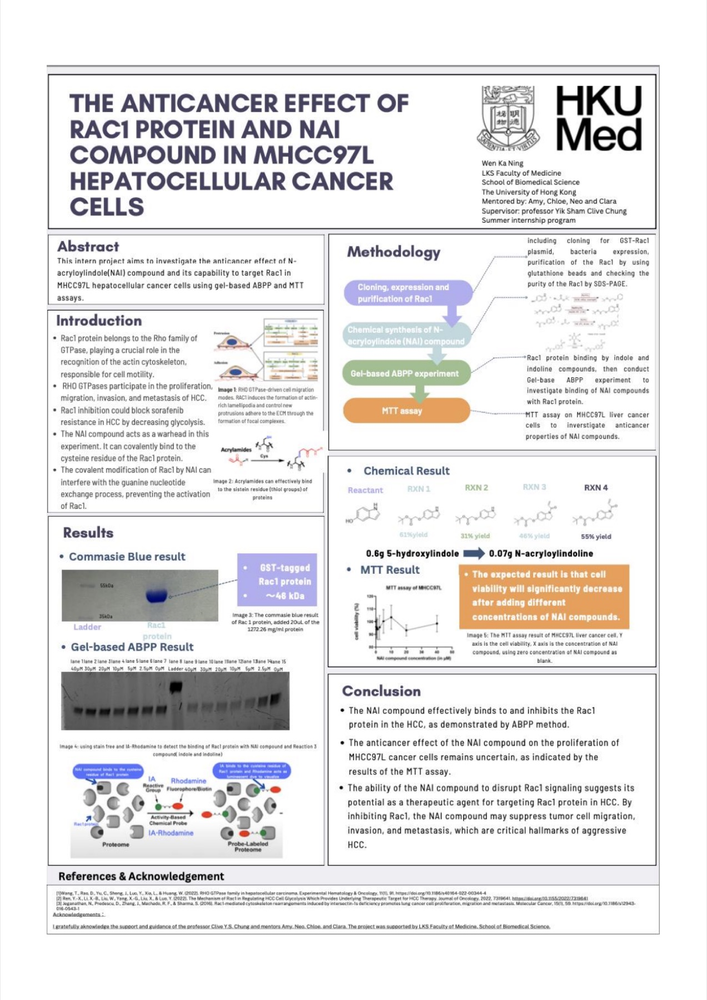
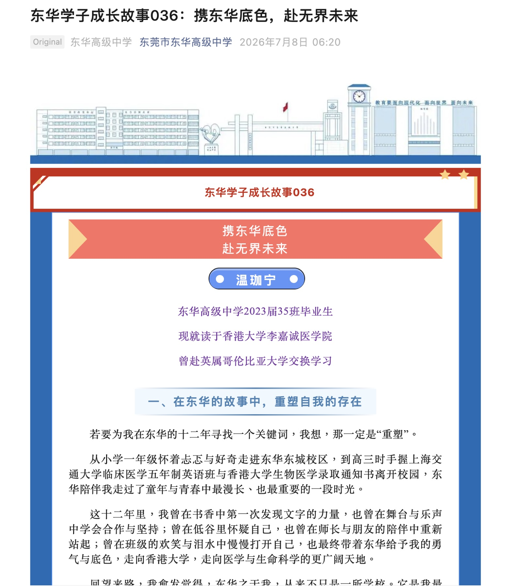

View poster ↗Synthetic lethality in glioblastoma
Investigated RPP25 and RPP25L gene redundancy using CRISPR-Cas9 knockout and GFP competition assays, identifying RPP25L as a potential therapeutic target in glioblastoma.
Biomedical science · AI · Investment
I explore how scientific ideas move from discovery to decision—and ultimately, to impact.

Healthcare & Technology
Private Equity
I’m a Biomedical Sciences and Finance student at The University of Hong Kong. My work spans CRISPR gene editing, single-cell machine learning, healthcare private equity, and company research.
I’m most energized where the vocabulary changes but the question stays the same: what makes an innovation scientifically sound, commercially viable, and useful to people?
A selection of original scientific, investment, and market research. Open any project to read the complete work.

View poster ↗Investigated RPP25 and RPP25L gene redundancy using CRISPR-Cas9 knockout and GFP competition assays, identifying RPP25L as a potential therapeutic target in glioblastoma.

View 19-page deck ↗A global landscape of organoid and organ-on-chip platforms, covering technology maturity, regulation, market growth, competitive positioning, and investment opportunities.

Download report ↓A 32-page company analysis connecting XtalPi’s AI, quantum physics, and robotic laboratory platform with commercial validation, competition, financial performance, DCF valuation, and risk.
A time-zone companion for long-distance relationships.
GitHub ↗ 02OutfitleAn AI wardrobe assistant using weather and calendar context.
Visit ↗Earlier scientific work and a recent profile about the experiences that shaped my path.

View poster ↗Studied the binding and potential anticancer effects of N-acryloylindole compounds using protein expression, gel-based ABPP, and MTT assays.
Open full poster ↗
Read feature ↗A Chinese-language alumni feature reflecting on twelve years at Donghua, studying biomedical sciences at HKU, and an exchange experience at UBC.
Read on WeChat ↗Each chapter has added a new way to understand healthcare innovation.
GF Xinde · Healthcare & Technology Private Equity
Due diligence across biotechnology, innovative medicine, brain-computer interfaces, and AI-enabled healthcare.School of Biomedical Sciences, HKU
Predicting gamma-delta T-cell states from single-cell transcriptomic data under incomplete labels and class imbalance.Centre for Oncology and Immunology
Applied large language models and high-throughput screening to improve prime-editing efficiency.LKS Faculty of Medicine, HKU
Characterized synthetic lethality in glioblastoma using CRISPR-Cas9 knockout.UBC Sauder School & Faculty of Medicine
Studied corporate finance, immunology, neuroscience, and built Outfitle at StormHacks.Asia-Pacific program
The University of Hong Kong
LKS Faculty of Medicine
Hong Kong Government
Ideas travel further in conversation
AI4Science · Healthcare investing · Startups
Hong Kong